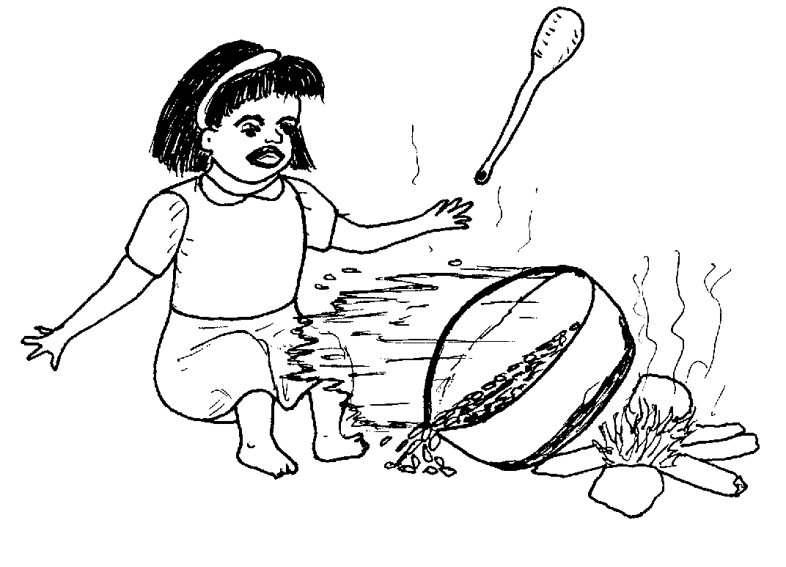
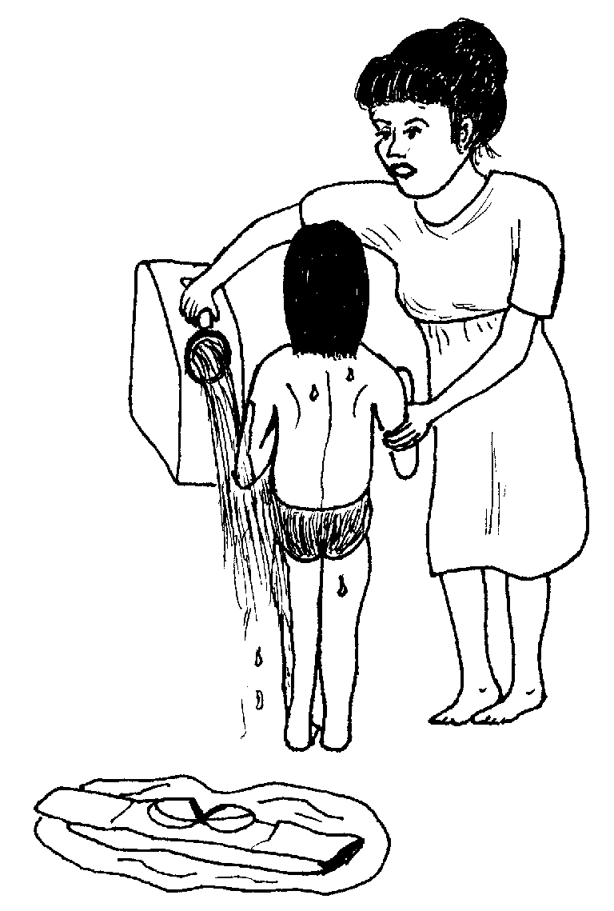
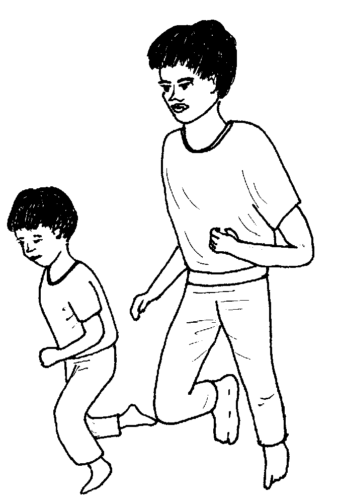
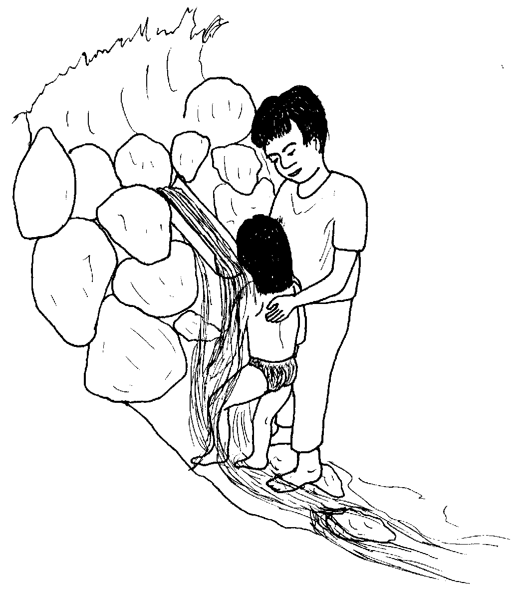
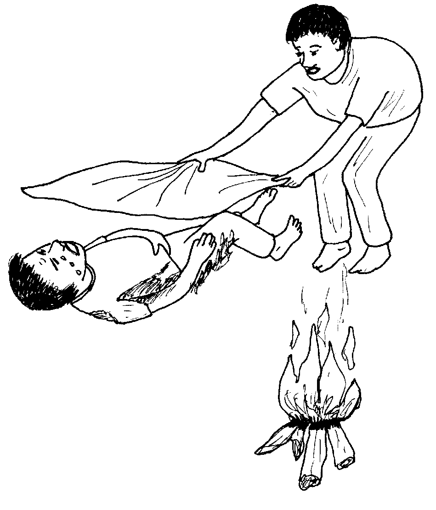
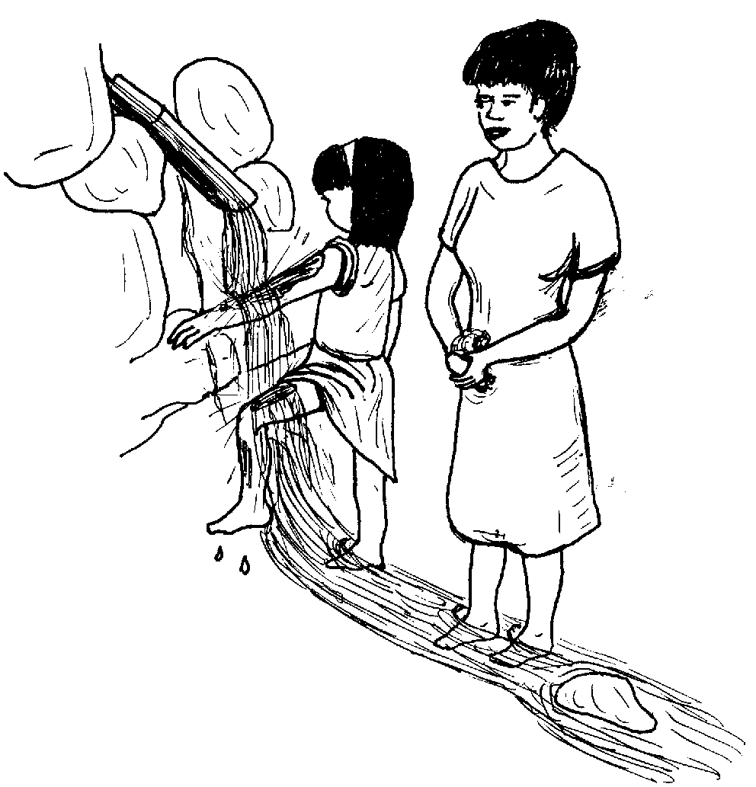
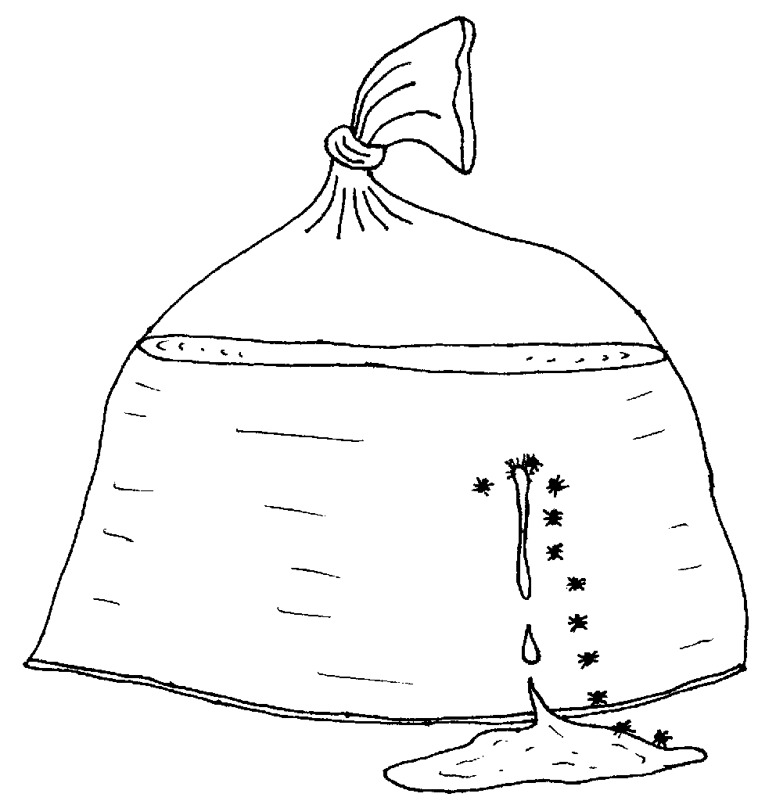
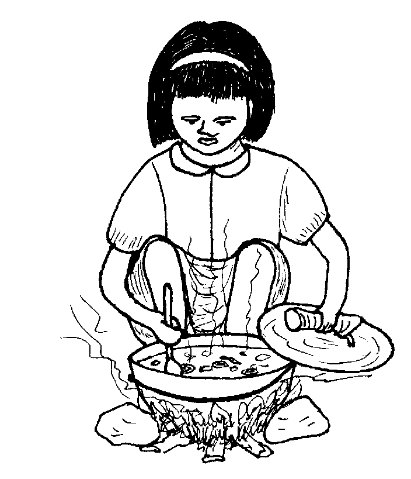

Matigsalug Manobo Healthbooks
Previous Healthbook Up to main Healthbooks page Next Healthbook
Vernacular Lexicon
A
B
BAP
BL
D
E
G
H
I
K
KI
L
LA
LIP
M
N
O
P
PA
R
S
SE
SIN
T
TE
TIN
U
V
W
Y
Z
Healthbooks
Migbulig si Iwayan te iney rin ne si Lolita teg andam te iglabung dan.
Te pegsusubba rin te gulay diyet abuwan dan, nasinggul ni Iwayan ka kuren ne migsubbaan din te gulay ne diye nakabus-ug te belad din wey bubun din.

Nakapanguleyi si Iwayan su masakit amana ka nabus-uhan.
Nalaggew amana si Lolita piru nakasuman-suman din te ingkahi ni Inuk kandin ke nekey ka eggimuwen din ke dueg katutung wey keg kaluwasan te meinit ne weyig.
Awaa rin dagdahawi si Iwayan diyet marani te abuwan wey inluungan din te kumbale, wey imbus-uhan din te maagsil ne weyig.

Pegkarineg enni Inuk wey ni Junjun ki Iwayan te migpanguleyi, migdagdahew e sikandan mig-uli ka egnengneng ke nekey ka neyitabu.

Kahi ni Lolita diyet kandan te, “Abpas kew rue! Sakug kew pa te weyig su naluwasan te meinit ne weyig si Iwayan! Tengtengi niyu, imbus-uhan kud si Iwayan te maagsil ne weyig iling te ingkahi nu keddi Inuk.”
Ne migkahi si Inuk te, “Meupiya. Pabulus ka samtang egsakug key pad te weyig.”
Impanakeru e ensi Inuk wey si Junjun, ne nataman, imbus-ug dan e te belad wey bubun ni Iwayan ne naluwasan.
Natagtaheed, te warad e weyig, in-uyan dan e si Iwayan diyet due tulalug ne egpanakeruwanan te me etew.

Bayew nalugluhayan si Iwayan ka impatulayasan ni Inuk diyet tulalug.
Tenged te egkasakitan pad si Iwayan te belad din wey bubun din ne naluwasan, migkuwa si Inuk te parasitamul ne impeinum din su eyew kene amanag masakit.
Impitew rin ka naluwasan, migpanlambetug e wey migmalalab e.
Migkahiyan ni Inuk si Lolita te, “Amana a ne nahale te migdagdahawan nu teg bus-ug si Iwayan su emun ke ware perem nasaluti teg bus-ug, egkareetan e perem ka laplap din. Igpahuspital buwa perem sikandin ke ware nasaluti teg bus-ug te weyig wey ke kene, kema ke egpatey rin.”
Kahi ni Inuk te, “Kene amanag pakarereet te laplap ke egkasalutan teg bus-ug te maagsil ne weyig.”
Ne migkahi si Lolita te, “Nakasuman-suman a te pegkatutung te kumbale te bate dengan neg ngaranan ki Anita.
“Migpalpallahuy ka bate te pegkaaldek din, te peg-awe dan e te kumbale din amanan dakel ka natutung.
“Wey ware dan man-e bus-uhi te weyig ka natutung. Puun dutu migpatey si Anita.”
Ne migkahi si Inuk te, “Keilangan neg bantayan ka me deisek ne bate ne iling pad ki Anita su kene dan pad egpakanengneng te delikaddu bes ka hapuy.”
Ne migkahi si Inuk te, “Keg kaayun, ka egmemeinit ne kasangkapan iling te sulu wey kuren, keilangan ne igpariyu taman te keneg keumaan te me bate.”
Ne mig-abey man-e sikandin ka migkahi te, “Ne emun man-e ke due etew neg kasilaban, keilangan ne kene egpalpallahuy, ke kene, eglilid-lilid diyet tane wey keg bubukusan dan naa te ulesen wey duma pad ne manggad eyew egkeebukan ka hapuy.”

Migkahiyan ni Inuk si Lolita te, “Keilangan ne tagse aldew eglu-luan nu te sebbun wey weyig ka paddel ni Iwayan. Piru banteyi nu ne keneg kapigse ka migpanlambetug su kema keg kaseleran te me kahew.”

Ne mig-inse si Lolita te, “Egbukusan te naan pad ka paddel rin?”
Ne migkahi si Inuk te, “Meupiya ke kene de egbukusan ka paddel piru emun keg bunbunan nu ma, keilangan ne malinis ne manggad ka igbukus nu wey keilangan neg liwanan emun keg kasubid e man-e wey ke malindit e.”
Te natagtaheed, migkahiyan ni Inuk si Lolita te, “Keilangan ne layun ta egpitawa ka paddel ni Iwayan su eyew egkanengnengan ta ke malinis naan ded ka paddel rin.
“Su egpakaseled ka kahew ke malindit ka paddel rin neg keyimu e man-e ne dakel ne paddel.”
Ne mig-inse si Lolita te, “Egmenuwen-a teg ila ne naseleran te kahew ka paddel?”
Ne migtabak si Inuk te, “Emun egmalalab e ka paddel wey egmeinit e. Ne emun man-e egnenane e wey egmangareg ka paddel.
“Ne sikan timpu, keilangan neg peinumen e sikandin te antibayutik ne iggimatey te kahew.”
Ne mig-inse si Lolita te, “Ken-u ne keilangan eggendiye te huspital ka egketutung?”
Ne migtabak si Inuk te, “Emun ke dakel kag katutung diyet ulaula, diyet kemel, wey ke amanan dakel ka natutung ne laplap, keilangan e neg gendiyet huspital.”
Migkahi si Inuk te, “Ka me etew ne natamtamanan natutung, mahaan de egkekehang ka laplap dan wey egkammaraan e ka me lawa ran su nareetan e ka laplap dan.”
Migpanulu sikandin ne migkahi te, “Ka laplap ta iling te silupin ne napenu te weyig. Ka me kahew diye te lihawangan, ne ka weyig diyet seled te silupin. Piru keg kabutbutan ka silupin, egkeitis e langun ka weyig.

“Ka laplap ta ka nekeelet te weyig kayit lawa ta, ne ka kahew, diye ded te lihawangan. Ke egkatutung ka laplap ta, egkeiling degma te lungag diyet silupin, egkeitis e ka weyig ne ka kahew egpakaseled e degma.
“Sika kag puunan ne due me etew neg patey neg katutung puun teg kekehang e ka laplap dan wey nammaraan e ka lawa ran. Su keilangan e neg uyanen e sikandan diyet huspital ke amana e ne masumpit.”
Nataman, napahan-ganaran e neulii si Iwayan wey egpakabulig-bulig din e man-e te iney rin.

Puun dutu, amana rin egbantey keg susubba sikandin wey te langun ne me meinit su kene din egkalingawan ka nabayaan din.
Nekey-a ka an-anayan neg gimuwen ta ke dueg kaluwasan, katutung, wey keg kasilaban?
Mania te keilangan ne eglinisan ta ka naluwasan wey ke natutung, wey keg menuwen ta teg linis?
Ken-ua eg-uyana diyet huspital ka natutung wey ke naluwasan naa?
This page last updated: 03-Jan-2020
Copyright © 2009-2010